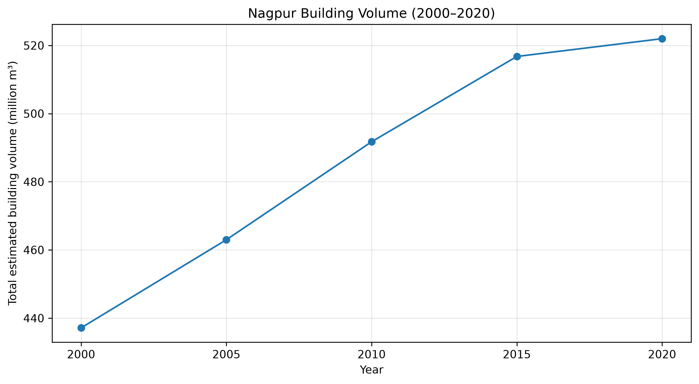

ASSIGNMENT 01 · RASTER ANALYSIS
Spatio-Temporal Analysis of Building Volume Changes in Nagpur (2000–2020)
This project analyses the spatial distribution and temporal changes in building volume in Nagpur, India, between 2000 and 2020 using GHSL Building Volume data. The analysis includes five-year observations, a change map, a time-series visualization, and building-volume results.
Open Complete Nagpur Dashboard →Key Outputs
- Building-volume maps for 2000 and 2020
- Building-volume change map for 2000–2020
- Five-year building-volume animation
- Time-series visualization of building volume
- CSV files containing building-volume results
- Spatial identification of building-volume changes
Visual Results

Explore Assignment Files
View Building-Volume Animation →
Explore changes over time.
View Building-Volume Change Map →
Inspect the mapped changes from 2000 to 2020.
View Building Volume — 2000 →
Open the 2000 building-volume map.
View Building Volume — 2020 →
Open the 2020 building-volume map.
View Final Results (CSV) →
Access the exported building-volume results.
View Top 10% Building-Volume Increases →
Open the exported increase results.
Data consistency note:
The totals shown on the supplied maps differ from the
supplied CSV totals. These values should be checked
against the source rasters and aggregation method before
being reported as validated city totals.